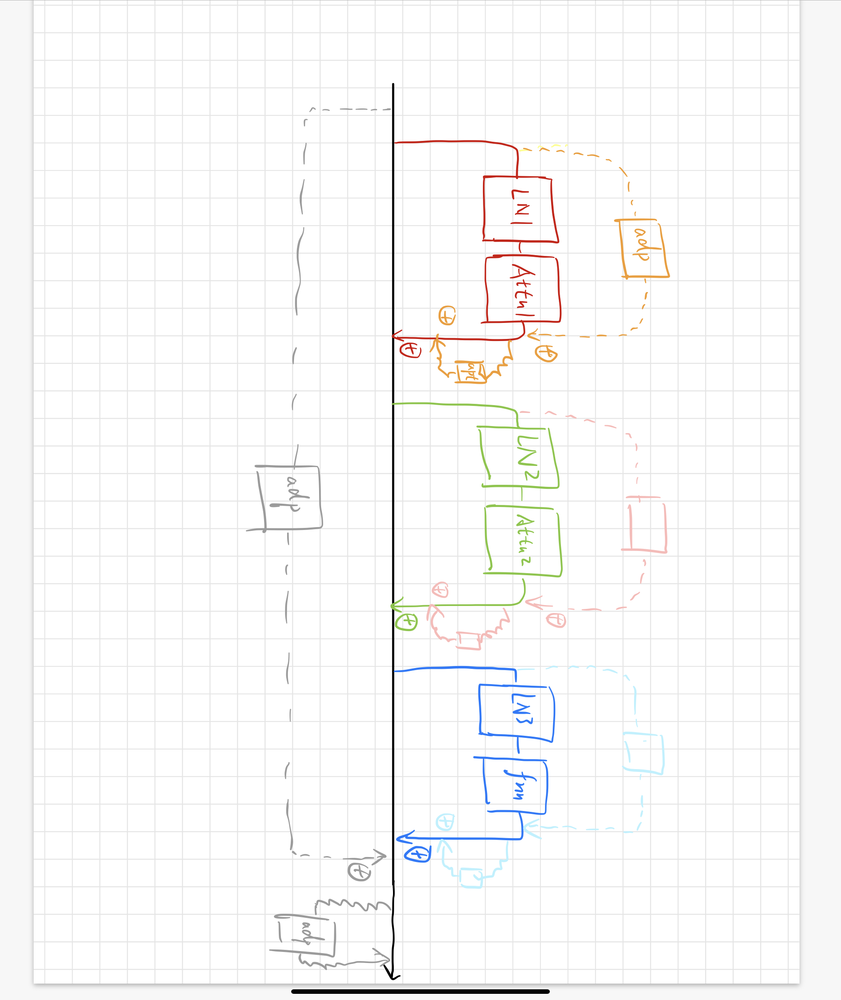
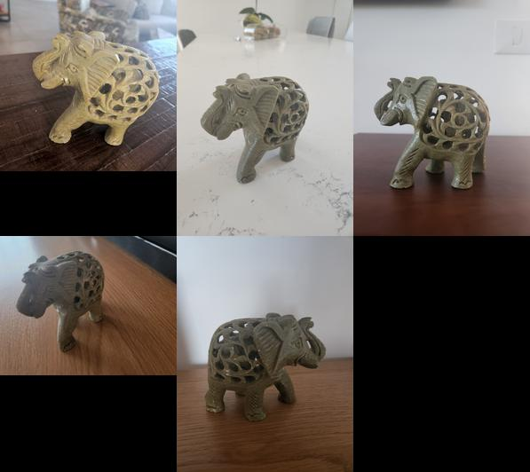
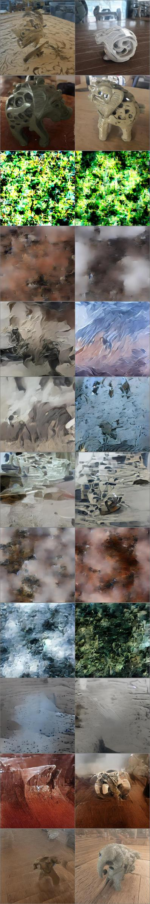
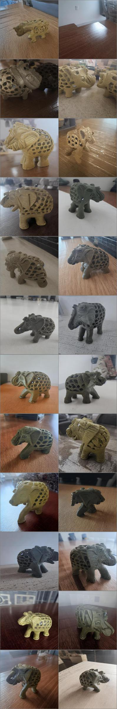
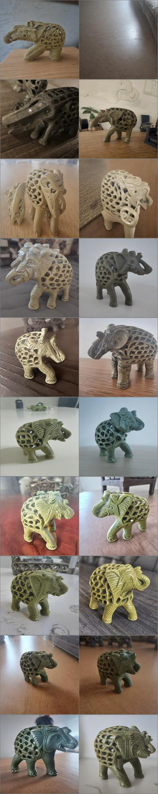

高效参数微调
[toc]
# 一些资源
https://github.com/GamerUntouch/textual_inversion
todo
- [ ] 看一下tranfer的code
- [ ] finetune的任务
- [x] 用conv 在resblock里
- [x] 还是指标的问题
- [x] 查lr, 查log
- [x] 画数据流向图
-
[ ] 画更加细致的数据流向图
-
[ ] 总结各个实验的结论
- [ ] 画实验效果对比的曲线
- [ ] 根据比较的对象调节组（线的颜色，虚实）
- [ ] 换个seed，重跑dream booth各个实验
前言
stable diffusion的火热, 让各种各样的(无论是编辑还是)
出发点
调什么样的参数部分有什么样的效果，直接对标高效参数微调。
-
在一个任务上把各个参数部分调透， 用优化的方法迁移到其他任务上
-
方法复现 textural inversion -》 dreambooth
-
==其他基于微调的任务==
-
有额外参数
- 调一部分参数
attention self， cross
linear
conv
定量指标
参数量， 训练步数，效果…… clip ==图到图match的方法==，
==编辑的指标（问赵敏学姐==
meta
一些结论
对于学习个位数样本的任务(textual inversion), mid_dim为30就足够有表达力, 并且和adapter的位置关系较弱
在图像数据通路上的adapter对于学习图片细节比位于文本数据通路上的adapter要好
对于dreambooth的任务, 几个方法会体现出区别
无论如何, 先读代码
主要研究几个问题:
- 如何让模型的参数锁住的(部分或者整体)
- 如何添加新的embedding进行训练
- 如何整合数据集
- 如何进行训练
textural inversion
# configs/latent-diffusion/txt2img-1p4B-finetune.yaml
DreamBooth
stable diffusion 模型架构
先看ddpm的代码
class DDPM(pl.LightningModule):
# classic DDPM with Gaussian diffusion, in image space
def __init__(self,
unet_config,
timesteps=1000,
beta_schedule="linear",
loss_type="l2",
ckpt_path=None,
ignore_keys=[],
load_only_unet=False,
monitor="val/loss",
use_ema=True,
first_stage_key="image",
image_size=256,
channels=3,
log_every_t=100,
clip_denoised=True,
linear_start=1e-4,
linear_end=2e-2,
cosine_s=8e-3,
given_betas=None,
original_elbo_weight=0.,
embedding_reg_weight=0.,
unfreeze_model=False,
model_lr=0.,
v_posterior=0., # weight for choosing posterior variance as sigma = (1-v) * beta_tilde + v * beta
l_simple_weight=1.,
conditioning_key=None,
parameterization="eps", # all assuming fixed variance schedules
scheduler_config=None,
use_positional_encodings=False,
learn_logvar=False,
logvar_init=0.,
):
super().__init__()
assert parameterization in ["eps", "x0"], 'currently only supporting "eps" and "x0"'
self.parameterization = parameterization
print(f"{self.__class__.__name__}: Running in {self.parameterization}-prediction mode")
self.cond_stage_model = None
self.clip_denoised = clip_denoised
self.log_every_t = log_every_t
self.first_stage_key = first_stage_key
self.image_size = image_size # try conv?
self.channels = channels
self.use_positional_encodings = use_positional_encodings
self.model = DiffusionWrapper(unet_config, conditioning_key) # 真正的模型在这里, 其他都是辅助参数
count_params(self.model, verbose=True)
self.use_ema = use_ema
if self.use_ema:
self.model_ema = LitEma(self.model)
print(f"Keeping EMAs of {len(list(self.model_ema.buffers()))}.")
self.use_scheduler = scheduler_config is not None
if self.use_scheduler:
self.scheduler_config = scheduler_config
self.v_posterior = v_posterior
self.original_elbo_weight = original_elbo_weight
self.l_simple_weight = l_simple_weight
self.embedding_reg_weight = embedding_reg_weight
self.unfreeze_model = unfreeze_model
self.model_lr = model_lr
if monitor is not None:
self.monitor = monitor
if ckpt_path is not None:
self.init_from_ckpt(ckpt_path, ignore_keys=ignore_keys, only_model=load_only_unet)
self.register_schedule(given_betas=given_betas, beta_schedule=beta_schedule, timesteps=timesteps,
linear_start=linear_start, linear_end=linear_end, cosine_s=cosine_s)
self.loss_type = loss_type
self.learn_logvar = learn_logvar
self.logvar = torch.full(fill_value=logvar_init, size=(self.num_timesteps,))
if self.learn_logvar:
self.logvar = nn.Parameter(self.logvar, requires_grad=True)
def register_schedule(self, given_betas=None, beta_schedule="linear", timesteps=1000,
linear_start=1e-4, linear_end=2e-2, cosine_s=8e-3):
if exists(given_betas):
betas = given_betas
else:
betas = make_beta_schedule(beta_schedule, timesteps, linear_start=linear_start, linear_end=linear_end,
cosine_s=cosine_s)
alphas = 1. - betas
alphas_cumprod = np.cumprod(alphas, axis=0)
alphas_cumprod_prev = np.append(1., alphas_cumprod[:-1])
timesteps, = betas.shape
self.num_timesteps = int(timesteps)
self.linear_start = linear_start
self.linear_end = linear_end
assert alphas_cumprod.shape[0] == self.num_timesteps, 'alphas have to be defined for each timestep'
to_torch = partial(torch.tensor, dtype=torch.float32)
self.register_buffer('betas', to_torch(betas))
self.register_buffer('alphas_cumprod', to_torch(alphas_cumprod))
self.register_buffer('alphas_cumprod_prev', to_torch(alphas_cumprod_prev))
# calculations for diffusion q(x_t | x_{t-1}) and others
self.register_buffer('sqrt_alphas_cumprod', to_torch(np.sqrt(alphas_cumprod)))
self.register_buffer('sqrt_one_minus_alphas_cumprod', to_torch(np.sqrt(1. - alphas_cumprod)))
self.register_buffer('log_one_minus_alphas_cumprod', to_torch(np.log(1. - alphas_cumprod)))
self.register_buffer('sqrt_recip_alphas_cumprod', to_torch(np.sqrt(1. / alphas_cumprod)))
self.register_buffer('sqrt_recipm1_alphas_cumprod', to_torch(np.sqrt(1. / alphas_cumprod - 1)))
# calculations for posterior q(x_{t-1} | x_t, x_0)
posterior_variance = (1 - self.v_posterior) * betas * (1. - alphas_cumprod_prev) / (
1. - alphas_cumprod) + self.v_posterior * betas
# above: equal to 1. / (1. / (1. - alpha_cumprod_tm1) + alpha_t / beta_t)
self.register_buffer('posterior_variance', to_torch(posterior_variance))
# below: log calculation clipped because the posterior variance is 0 at the beginning of the diffusion chain
self.register_buffer('posterior_log_variance_clipped', to_torch(np.log(np.maximum(posterior_variance, 1e-20))))
self.register_buffer('posterior_mean_coef1', to_torch(
betas * np.sqrt(alphas_cumprod_prev) / (1. - alphas_cumprod)))
self.register_buffer('posterior_mean_coef2', to_torch(
(1. - alphas_cumprod_prev) * np.sqrt(alphas) / (1. - alphas_cumprod)))
if self.parameterization == "eps":
lvlb_weights = self.betas ** 2 / (
2 * self.posterior_variance * to_torch(alphas) * (1 - self.alphas_cumprod))
elif self.parameterization == "x0":
lvlb_weights = 0.5 * np.sqrt(torch.Tensor(alphas_cumprod)) / (2. * 1 - torch.Tensor(alphas_cumprod))
else:
raise NotImplementedError("mu not supported")
# TODO how to choose this term
lvlb_weights[0] = lvlb_weights[1]
self.register_buffer('lvlb_weights', lvlb_weights, persistent=False)
assert not torch.isnan(self.lvlb_weights).all()
@contextmanager
def ema_scope(self, context=None):
if self.use_ema:
self.model_ema.store(self.model.parameters())
self.model_ema.copy_to(self.model)
if context is not None:
print(f"{context}: Switched to EMA weights")
try:
yield None
finally:
if self.use_ema:
self.model_ema.restore(self.model.parameters())
if context is not None:
print(f"{context}: Restored training weights")
def init_from_ckpt(self, path, ignore_keys=list(), only_model=False):
sd = torch.load(path, map_location="cpu")
if "state_dict" in list(sd.keys()):
sd = sd["state_dict"]
keys = list(sd.keys())
for k in keys:
for ik in ignore_keys:
if k.startswith(ik):
print("Deleting key {} from state_dict.".format(k))
del sd[k]
missing, unexpected = self.load_state_dict(sd, strict=False) if not only_model else self.model.load_state_dict(
sd, strict=False)
print(f"Restored from {path} with {len(missing)} missing and {len(unexpected)} unexpected keys")
if len(missing) > 0: # 新加的module会在这里
print(f"Missing Keys: {missing}")
if len(unexpected) > 0:
print(f"Unexpected Keys: {unexpected}")
def q_mean_variance(self, x_start, t):
"""
Get the distribution q(x_t | x_0).
:param x_start: the [N x C x ...] tensor of noiseless inputs.
:param t: the number of diffusion steps (minus 1). Here, 0 means one step.
:return: A tuple (mean, variance, log_variance), all of x_start's shape.
"""
mean = (extract_into_tensor(self.sqrt_alphas_cumprod, t, x_start.shape) * x_start)
variance = extract_into_tensor(1.0 - self.alphas_cumprod, t, x_start.shape)
log_variance = extract_into_tensor(self.log_one_minus_alphas_cumprod, t, x_start.shape)
return mean, variance, log_variance
def predict_start_from_noise(self, x_t, t, noise):
return (
extract_into_tensor(self.sqrt_recip_alphas_cumprod, t, x_t.shape) * x_t -
extract_into_tensor(self.sqrt_recipm1_alphas_cumprod, t, x_t.shape) * noise
)
def q_posterior(self, x_start, x_t, t):
posterior_mean = (
extract_into_tensor(self.posterior_mean_coef1, t, x_t.shape) * x_start +
extract_into_tensor(self.posterior_mean_coef2, t, x_t.shape) * x_t
)
posterior_variance = extract_into_tensor(self.posterior_variance, t, x_t.shape)
posterior_log_variance_clipped = extract_into_tensor(self.posterior_log_variance_clipped, t, x_t.shape)
return posterior_mean, posterior_variance, posterior_log_variance_clipped
def p_mean_variance(self, x, t, clip_denoised: bool):
model_out = self.model(x, t)
if self.parameterization == "eps":
x_recon = self.predict_start_from_noise(x, t=t, noise=model_out)
elif self.parameterization == "x0":
x_recon = model_out
if clip_denoised:
x_recon.clamp_(-1., 1.)
model_mean, posterior_variance, posterior_log_variance = self.q_posterior(x_start=x_recon, x_t=x, t=t)
return model_mean, posterior_variance, posterior_log_variance
@torch.no_grad()
def p_sample(self, x, t, clip_denoised=True, repeat_noise=False):
b, *_, device = *x.shape, x.device
model_mean, _, model_log_variance = self.p_mean_variance(x=x, t=t, clip_denoised=clip_denoised)
noise = noise_like(x.shape, device, repeat_noise)
# no noise when t == 0
nonzero_mask = (1 - (t == 0).float()).reshape(b, *((1,) * (len(x.shape) - 1)))
return model_mean + nonzero_mask * (0.5 * model_log_variance).exp() * noise
@torch.no_grad()
def p_sample_loop(self, shape, return_intermediates=False):
device = self.betas.device
b = shape[0]
img = torch.randn(shape, device=device)
intermediates = [img]
for i in tqdm(reversed(range(0, self.num_timesteps)), desc='Sampling t', total=self.num_timesteps):
img = self.p_sample(img, torch.full((b,), i, device=device, dtype=torch.long),
clip_denoised=self.clip_denoised)
if i % self.log_every_t == 0 or i == self.num_timesteps - 1:
intermediates.append(img)
if return_intermediates:
return img, intermediates
return img
@torch.no_grad()
def sample(self, batch_size=16, return_intermediates=False):
image_size = self.image_size
channels = self.channels
return self.p_sample_loop((batch_size, channels, image_size, image_size),
return_intermediates=return_intermediates)
def q_sample(self, x_start, t, noise=None):
noise = default(noise, lambda: torch.randn_like(x_start))
return (extract_into_tensor(self.sqrt_alphas_cumprod, t, x_start.shape) * x_start +
extract_into_tensor(self.sqrt_one_minus_alphas_cumprod, t, x_start.shape) * noise)
def get_loss(self, pred, target, mean=True):
if self.loss_type == 'l1':
loss = (target - pred).abs()
if mean:
loss = loss.mean()
elif self.loss_type == 'l2':
if mean:
loss = torch.nn.functional.mse_loss(target, pred)
else:
loss = torch.nn.functional.mse_loss(target, pred, reduction='none')
else:
raise NotImplementedError("unknown loss type '{loss_type}'")
return loss
def p_losses(self, x_start, t, noise=None):
noise = default(noise, lambda: torch.randn_like(x_start))
x_noisy = self.q_sample(x_start=x_start, t=t, noise=noise)
model_out = self.model(x_noisy, t)
loss_dict = {}
if self.parameterization == "eps":
target = noise
elif self.parameterization == "x0":
target = x_start
else:
raise NotImplementedError(f"Paramterization {self.parameterization} not yet supported")
loss = self.get_loss(model_out, target, mean=False).mean(dim=[1, 2, 3])
log_prefix = 'train' if self.training else 'val'
loss_dict.update({f'{log_prefix}/loss_simple': loss.mean()})
loss_simple = loss.mean() * self.l_simple_weight
loss_vlb = (self.lvlb_weights[t] * loss).mean()
loss_dict.update({f'{log_prefix}/loss_vlb': loss_vlb})
loss = loss_simple + self.original_elbo_weight * loss_vlb
loss_dict.update({f'{log_prefix}/loss': loss})
return loss, loss_dict
def forward(self, x, *args, **kwargs):
# b, c, h, w, device, img_size, = *x.shape, x.device, self.image_size
# assert h == img_size and w == img_size, f'height and width of image must be {img_size}'
t = torch.randint(0, self.num_timesteps, (x.shape[0],), device=self.device).long()
return self.p_losses(x, t, *args, **kwargs)
def get_input(self, batch, k):
x = batch[k]
if len(x.shape) == 3:
x = x[..., None]
x = rearrange(x, 'b h w c -> b c h w')
x = x.to(memory_format=torch.contiguous_format).float()
return x
def shared_step(self, batch):
x = self.get_input(batch, self.first_stage_key)
loss, loss_dict = self(x)
return loss, loss_dict
def training_step(self, batch, batch_idx):
loss, loss_dict = self.shared_step(batch)
self.log_dict(loss_dict, prog_bar=True,
logger=True, on_step=True, on_epoch=True)
self.log("global_step", self.global_step,
prog_bar=True, logger=True, on_step=True, on_epoch=False)
if self.use_scheduler:
lr = self.optimizers().param_groups[0]['lr']
self.log('lr_abs', lr, prog_bar=True, logger=True, on_step=True, on_epoch=False)
return loss
@torch.no_grad()
def validation_step(self, batch, batch_idx):
_, loss_dict_no_ema = self.shared_step(batch)
with self.ema_scope():
_, loss_dict_ema = self.shared_step(batch)
loss_dict_ema = {key + '_ema': loss_dict_ema[key] for key in loss_dict_ema}
self.log_dict(loss_dict_no_ema, prog_bar=False, logger=True, on_step=False, on_epoch=True)
self.log_dict(loss_dict_ema, prog_bar=False, logger=True, on_step=False, on_epoch=True)
def on_train_batch_end(self, *args, **kwargs):
if self.use_ema:
self.model_ema(self.model)
def _get_rows_from_list(self, samples):
n_imgs_per_row = len(samples)
denoise_grid = rearrange(samples, 'n b c h w -> b n c h w')
denoise_grid = rearrange(denoise_grid, 'b n c h w -> (b n) c h w')
denoise_grid = make_grid(denoise_grid, nrow=n_imgs_per_row)
return denoise_grid
@torch.no_grad()
def log_images(self, batch, N=8, n_row=2, sample=True, return_keys=None, **kwargs):
log = dict()
x = self.get_input(batch, self.first_stage_key)
N = min(x.shape[0], N)
n_row = min(x.shape[0], n_row)
x = x.to(self.device)[:N]
log["inputs"] = x
# get diffusion row
diffusion_row = list()
x_start = x[:n_row]
for t in range(self.num_timesteps):
if t % self.log_every_t == 0 or t == self.num_timesteps - 1:
t = repeat(torch.tensor([t]), '1 -> b', b=n_row)
t = t.to(self.device).long()
noise = torch.randn_like(x_start)
x_noisy = self.q_sample(x_start=x_start, t=t, noise=noise)
diffusion_row.append(x_noisy)
log["diffusion_row"] = self._get_rows_from_list(diffusion_row)
if sample:
# get denoise row
with self.ema_scope("Plotting"):
samples, denoise_row = self.sample(batch_size=N, return_intermediates=True)
log["samples"] = samples
log["denoise_row"] = self._get_rows_from_list(denoise_row)
if return_keys:
if np.intersect1d(list(log.keys()), return_keys).shape[0] == 0:
return log
else:
return {key: log[key] for key in return_keys}
return log
def configure_optimizers(self):
lr = self.learning_rate
params = list(self.model.parameters())
if self.learn_logvar:
params = params + [self.logvar]
opt = torch.optim.AdamW(params, lr=lr)
return opt
class UNetModel(nn.Module):
"""
The full UNet model with attention and timestep embedding.
:param in_channels: channels in the input Tensor.
:param model_channels: base channel count for the model.
:param out_channels: channels in the output Tensor.
:param num_res_blocks: number of residual blocks per downsample.
:param attention_resolutions: a collection of downsample rates at which
attention will take place. May be a set, list, or tuple.
For example, if this contains 4, then at 4x downsampling, attention
will be used.
:param dropout: the dropout probability.
:param channel_mult: channel multiplier for each level of the UNet.
:param conv_resample: if True, use learned convolutions for upsampling and
downsampling.
:param dims: determines if the signal is 1D, 2D, or 3D.
:param num_classes: if specified (as an int), then this model will be
class-conditional with `num_classes` classes.
:param use_checkpoint: use gradient checkpointing to reduce memory usage.
:param num_heads: the number of attention heads in each attention layer.
:param num_heads_channels: if specified, ignore num_heads and instead use
a fixed channel width per attention head.
:param num_heads_upsample: works with num_heads to set a different number
of heads for upsampling. Deprecated.
:param use_scale_shift_norm: use a FiLM-like conditioning mechanism.
:param resblock_updown: use residual blocks for up/downsampling.
:param use_new_attention_order: use a different attention pattern for potentially
increased efficiency.
"""
def __init__(
self,
image_size,
in_channels,
model_channels,
out_channels,
num_res_blocks,
attention_resolutions,
dropout=0,
channel_mult=(1, 2, 4, 8),
conv_resample=True,
dims=2,
num_classes=None,
use_checkpoint=False,
use_fp16=False,
num_heads=-1,
num_head_channels=-1,
num_heads_upsample=-1,
use_scale_shift_norm=False,
resblock_updown=False,
use_new_attention_order=False,
use_spatial_transformer=False, # custom transformer support
transformer_depth=1, # custom transformer support
context_dim=None, # custom transformer support
n_embed=None, # custom support for prediction of discrete ids into codebook of first stage vq model
legacy=True,
):
super().__init__()
if use_spatial_transformer:
assert context_dim is not None, 'Fool!! You forgot to include the dimension of your cross-attention conditioning...'
if context_dim is not None:
assert use_spatial_transformer, 'Fool!! You forgot to use the spatial transformer for your cross-attention conditioning...'
from omegaconf.listconfig import ListConfig
if type(context_dim) == ListConfig:
context_dim = list(context_dim)
if num_heads_upsample == -1:
num_heads_upsample = num_heads
if num_heads == -1:
assert num_head_channels != -1, 'Either num_heads or num_head_channels has to be set'
if num_head_channels == -1:
assert num_heads != -1, 'Either num_heads or num_head_channels has to be set'
self.image_size = image_size
self.in_channels = in_channels
self.model_channels = model_channels
self.out_channels = out_channels
self.num_res_blocks = num_res_blocks
self.attention_resolutions = attention_resolutions
self.dropout = dropout
self.channel_mult = channel_mult
self.conv_resample = conv_resample
self.num_classes = num_classes
self.use_checkpoint = use_checkpoint
self.dtype = th.float16 if use_fp16 else th.float32
self.num_heads = num_heads
self.num_head_channels = num_head_channels
self.num_heads_upsample = num_heads_upsample
self.predict_codebook_ids = n_embed is not None
time_embed_dim = model_channels * 4
self.time_embed = nn.Sequential(
linear(model_channels, time_embed_dim),
nn.SiLU(),
linear(time_embed_dim, time_embed_dim),
)
if self.num_classes is not None:
self.label_emb = nn.Embedding(num_classes, time_embed_dim)
self.input_blocks = nn.ModuleList(
[
TimestepEmbedSequential(
conv_nd(dims, in_channels, model_channels, 3, padding=1)
)
]
)
self._feature_size = model_channels
input_block_chans = [model_channels]
ch = model_channels
ds = 1
for level, mult in enumerate(channel_mult):
for _ in range(num_res_blocks):
layers = [
ResBlock(
ch,
time_embed_dim,
dropout,
out_channels=mult * model_channels,
dims=dims,
use_checkpoint=use_checkpoint,
use_scale_shift_norm=use_scale_shift_norm,
)
]
ch = mult * model_channels
if ds in attention_resolutions:
if num_head_channels == -1:
dim_head = ch // num_heads
else:
num_heads = ch // num_head_channels
dim_head = num_head_channels
if legacy:
#num_heads = 1
dim_head = ch // num_heads if use_spatial_transformer else num_head_channels
layers.append(
AttentionBlock(
ch,
use_checkpoint=use_checkpoint,
num_heads=num_heads,
num_head_channels=dim_head,
use_new_attention_order=use_new_attention_order,
) if not use_spatial_transformer else SpatialTransformer(
ch, num_heads, dim_head, depth=transformer_depth, context_dim=context_dim
)
)
self.input_blocks.append(TimestepEmbedSequential(*layers))
self._feature_size += ch
input_block_chans.append(ch)
if level != len(channel_mult) - 1:
out_ch = ch
self.input_blocks.append(
TimestepEmbedSequential(
ResBlock(
ch,
time_embed_dim,
dropout,
out_channels=out_ch,
dims=dims,
use_checkpoint=use_checkpoint,
use_scale_shift_norm=use_scale_shift_norm,
down=True,
)
if resblock_updown
else Downsample(
ch, conv_resample, dims=dims, out_channels=out_ch
)
)
)
ch = out_ch
input_block_chans.append(ch)
ds *= 2
self._feature_size += ch
if num_head_channels == -1:
dim_head = ch // num_heads
else:
num_heads = ch // num_head_channels
dim_head = num_head_channels
if legacy:
#num_heads = 1
dim_head = ch // num_heads if use_spatial_transformer else num_head_channels
self.middle_block = TimestepEmbedSequential(
ResBlock(
ch,
time_embed_dim,
dropout,
dims=dims,
use_checkpoint=use_checkpoint,
use_scale_shift_norm=use_scale_shift_norm,
),
AttentionBlock(
ch,
use_checkpoint=use_checkpoint,
num_heads=num_heads,
num_head_channels=dim_head,
use_new_attention_order=use_new_attention_order,
) if not use_spatial_transformer else SpatialTransformer(
ch, num_heads, dim_head, depth=transformer_depth, context_dim=context_dim
),
ResBlock(
ch,
time_embed_dim,
dropout,
dims=dims,
use_checkpoint=use_checkpoint,
use_scale_shift_norm=use_scale_shift_norm,
),
)
self._feature_size += ch
self.output_blocks = nn.ModuleList([])
for level, mult in list(enumerate(channel_mult))[::-1]:
for i in range(num_res_blocks + 1):
ich = input_block_chans.pop()
layers = [
ResBlock(
ch + ich,
time_embed_dim,
dropout,
out_channels=model_channels * mult,
dims=dims,
use_checkpoint=use_checkpoint,
use_scale_shift_norm=use_scale_shift_norm,
)
]
ch = model_channels * mult
if ds in attention_resolutions:
if num_head_channels == -1:
dim_head = ch // num_heads
else:
num_heads = ch // num_head_channels
dim_head = num_head_channels
if legacy:
#num_heads = 1
dim_head = ch // num_heads if use_spatial_transformer else num_head_channels
layers.append(
AttentionBlock(
ch,
use_checkpoint=use_checkpoint,
num_heads=num_heads_upsample,
num_head_channels=dim_head,
use_new_attention_order=use_new_attention_order,
) if not use_spatial_transformer else SpatialTransformer(
ch, num_heads, dim_head, depth=transformer_depth, context_dim=context_dim
)
)
if level and i == num_res_blocks:
out_ch = ch
layers.append(
ResBlock(
ch,
time_embed_dim,
dropout,
out_channels=out_ch,
dims=dims,
use_checkpoint=use_checkpoint,
use_scale_shift_norm=use_scale_shift_norm,
up=True,
)
if resblock_updown
else Upsample(ch, conv_resample, dims=dims, out_channels=out_ch)
)
ds //= 2
self.output_blocks.append(TimestepEmbedSequential(*layers))
self._feature_size += ch
self.out = nn.Sequential(
normalization(ch),
nn.SiLU(),
zero_module(conv_nd(dims, model_channels, out_channels, 3, padding=1)),
)
if self.predict_codebook_ids:
self.id_predictor = nn.Sequential(
normalization(ch),
conv_nd(dims, model_channels, n_embed, 1),
#nn.LogSoftmax(dim=1) # change to cross_entropy and produce non-normalized logits
)
def convert_to_fp16(self):
"""
Convert the torso of the model to float16.
"""
self.input_blocks.apply(convert_module_to_f16)
self.middle_block.apply(convert_module_to_f16)
self.output_blocks.apply(convert_module_to_f16)
def convert_to_fp32(self):
"""
Convert the torso of the model to float32.
"""
self.input_blocks.apply(convert_module_to_f32)
self.middle_block.apply(convert_module_to_f32)
self.output_blocks.apply(convert_module_to_f32)
def forward(self, x, timesteps=None, context=None, y=None,**kwargs):
"""
Apply the model to an input batch.
:param x: an [N x C x ...] Tensor of inputs.
:param timesteps: a 1-D batch of timesteps.
:param context: conditioning plugged in via crossattn
:param y: an [N] Tensor of labels, if class-conditional.
:return: an [N x C x ...] Tensor of outputs.
"""
assert (y is not None) == (
self.num_classes is not None
), "must specify y if and only if the model is class-conditional"
hs = []
t_emb = timestep_embedding(timesteps, self.model_channels, repeat_only=False)
emb = self.time_embed(t_emb)
if self.num_classes is not None:
assert y.shape == (x.shape[0],)
emb = emb + self.label_emb(y)
h = x.type(self.dtype)
for module in self.input_blocks:
h = module(h, emb, context)
hs.append(h)
h = self.middle_block(h, emb, context)
for module in self.output_blocks:
h = th.cat([h, hs.pop()], dim=1)
h = module(h, emb, context)
h = h.type(x.dtype)
if self.predict_codebook_ids:
return self.id_predictor(h)
else:
return self.out(h)
设置模型哪些参数可调
if not self.unfreeze_model:
self.cond_stage_model.eval()
self.cond_stage_model.train = disabled_train
for param in self.cond_stage_model.parameters():
param.requires_grad = False
self.model.eval()
self.model.train = disabled_train
for param in self.model.parameters():
param.requires_grad = False
先加载不同模型,用随机初始化的adapter进行试验
处理模型保存, 加载即可训练
以上都已经完成了
Attention layer

case分析
data

textual inversion

para-attn1-30
train 烂了。

并且初步认为train烂的主要原因是adapters。原因如下:
使用训练不同步的adapter和embedding分别进行生成, 查看效果。
| down adapter/ right embedding | 749 | 3249 |
|---|---|---|
| 749 |  |
 |
| 3249 |  |
 |
有两种可能, 第一, attn1不适合使用adapter, 第二, adapter的参数量不够, 表达能力欠缺。
para-attn2-30
还行。

para-whole-30
train 烂了, 烂的很厉害。

para-fnn-30

| score | type | position | if input after attn2? |
|---|---|---|---|
| 0.89459735 | seq | attn2 | √ |
| 0.89356434 | origin | origin | |
| 0.87700015 | cross | attn2 | √ |
| 0.8396365 | para | fnn | √ |
| 0.8309803 | seq | whole | √ |
| 0.81560886 | para | res | √ |
| 0.74910975 | seq | res | too far |
| 0.7448496 | para | attn1 | |
| 0.72547716 | seq | fnn | √ |
| 0.7089758 | para | whole | |
| 0.70698935 | para | attn2 | |
| 0.69290626 | seq | attn1 |